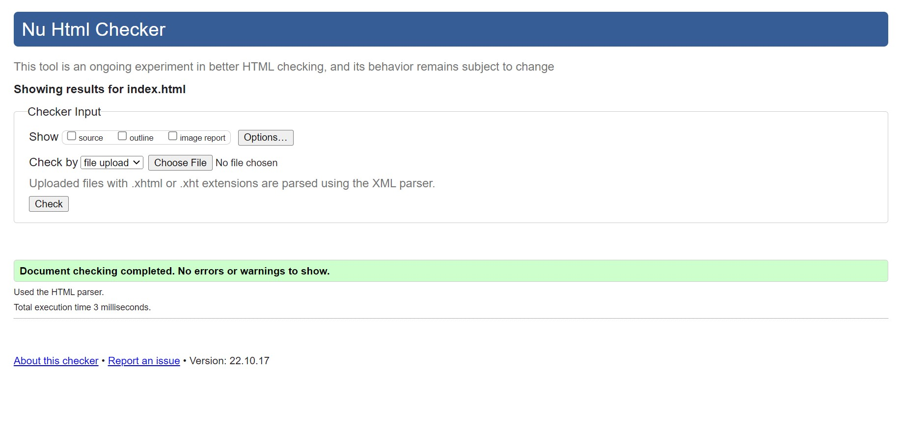
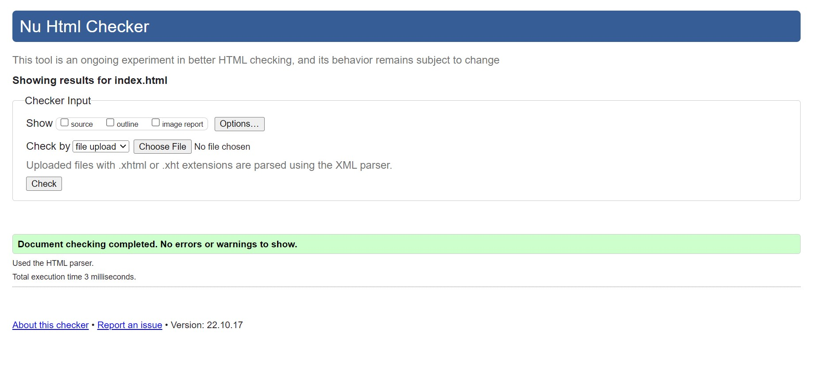

My name is Lillian Vasseur and I am studying Video Game Design and Develpoment at the New England Institute of Technology. I've always been interested in art and games, they shaped my interests and what I choose to do with my free time. Many of my designs involve fantasy creatures or places, this comes from many of my favorite games being RPGs and fantasy. When I was in highschool I enjoyed taking the art classes and chose to spend my free blocks there working on personal projects or class work. When it came time to look into college programs I knew I wanted to do something art related or something to do with history since that is another one of my passions. Different events and choices led me to apply to NEIT, I was accepted and decided to go with it. Now I'm in my first term at NEIT and am enjoying learning more about my passions and what I can do with them.
 
